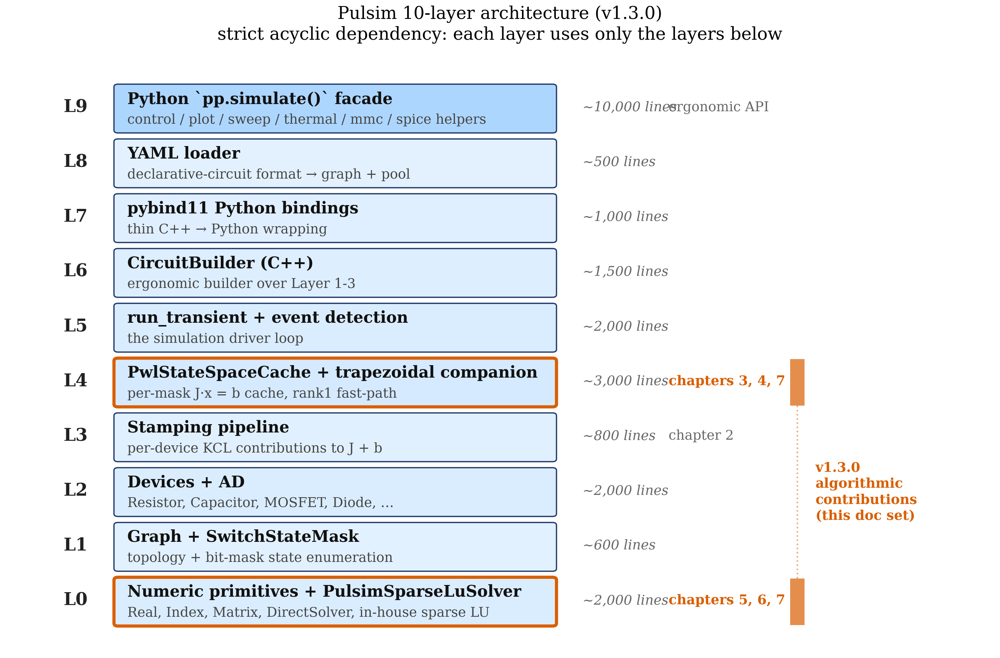

9. Architecture Walkthrough¶
The previous eight chapters covered the algorithms. This chapter covers the codebase: the 10-layer architecture that organises ~30,000 lines of C++23 + Python so that each algorithm fits cleanly into its own slot. By the end you'll know where to start reading, what each layer is responsible for, and where to add a new device, a new ODE discretisation, or a new sparse-LU optimisation.
9.1 The layer model¶
Pulsim's kernel is organised as 10 strictly acyclic layers. Each layer depends on all layers below; no layer depends on any layer above. This is the same discipline that makes the Linux kernel + LLVM scaleable: a clean dependency DAG lets each layer be tested in isolation without spinning up the layers above.

Figure 9.1 — The 10 layers of the Pulsim kernel, from the
numeric primitives at the bottom to the Python pp.simulate(...)
ergonomic facade at the top. Each box is shaded by its line-
count contribution (relative size); arrows show the algorithm
each layer hosts (from chapters 2-7). The "v1.3.0 algorithmic
contributions" highlighted on the right are the topics of this
doc set.
The dependency rule is enforced by per-layer CMake targets
and separate test binaries (pulsim_core_layer{0..9}_tests).
If Layer 4's tests link successfully without Layer 5+, the
layer separation is provably enforced; conversely, if a Layer 2
test fails to compile after editing Layer 3, that's a
direction-of-dependency leak that fails CI.
9.2 Layer-by-layer summary¶
Layer 0 — Numeric primitives¶
Responsibilities: Real (double), Index (int64),
Vector (Eigen dense), Matrix (Eigen sparse, CSC). The
DirectSolver abstract interface (analyze / factorize /
solve / partial_refactor). The SparseLuSolver (Eigen
reference, Backend::Eigen) and PulsimSparseLuSolver
(in-house, default since v1.3.0). Number-type aliases used by
every other layer.
Hosts: Chapters 5-7's algorithms. ~1,500 lines.
Headers: core/include/pulsim/numeric/,
core/include/pulsim/sparse/.
Tests: core/tests/layer0/ — 227 assertions across 41
test cases at v1.3.0 (the in-house sparse LU coverage).
Layer 1 — Topology + switch enumeration¶
Responsibilities: Graph (nodes + branches),
BranchKind enum (Passive, Source, Switch, ...),
SwitchStateMask (64-bit bitset of switch positions). The
graph operations that turn an abstract circuit into something
the assemblers can stamp.
Headers: core/include/pulsim/topology/.
Tests: core/tests/layer1/.
Layer 2 — Device models + automatic differentiation¶
Responsibilities: the device library —
Resistor, Capacitor, Inductor, VoltageSource,
IdealDiode, MosfetLevel1, IgbtLevel1, Transformer, etc.
Each device exposes evaluate_current_and_jacobian(state)
returning \(i\) and \(\partial i / \partial v\) via forward-mode
automatic differentiation.
Headers: core/include/pulsim/pwl/devices/,
core/include/pulsim/ad/.
Tests: core/tests/layer2/,
core/tests/layer2_v1/ (MOSFET/IGBT specialised),
core/tests/layer2_v2/ (transformer).
Layer 3 — Stamping pipeline¶
Responsibilities: stamp_device<DeviceKind>(graph, pool,
mask, J, b) — for each device kind, contribute its KCL
stamps + RHS contribution to the global \(J\) and \(\mathbf{b}\).
Chapter 2 §2.4 walked the buck example; the stamp functions
are what assemble those entries.
Headers: core/include/pulsim/pwl/assemble.hpp,
core/include/pulsim/pwl/dc_assemble.hpp.
Tests: core/tests/layer3/.
Layer 4 — PWL state-space cache + trapezoidal companion¶
Responsibilities: the architectural pivot.
PwlStateSpaceCache (chapter 4), trapezoidal companion
discretisation (chapter 3), DC operating-point solver,
Newton-refinement on nonlinear devices, the
solve_rank1(...) v1.3.0 fast-path (chapter 7's algorithm
plugged in here, extended by v1.4.0 to handle multi-bit
transitions via path-union; chapter 8 §8.11.1), and the
refactor_parametric(...) v1.4.0 API for sweep / Monte
Carlo workloads (chapter 8 §8.11.2).
Headers: core/include/pulsim/pwl/cache.hpp,
core/include/pulsim/pwl/dc_op.hpp,
core/include/pulsim/pwl/device_pool.hpp (v1.4.0 added
columns_affected_by_branch / update_* / kind_of for the
parametric refactor pipeline).
Tests:
- core/tests/layer4/test_pwl_cache_rank1.cpp — single-bit
Gray-code rank-1 fast path + v1.4.0 multi-bit routing
- core/tests/layer4/test_pwl_cache_parametric.cpp — v1.4.0
parametric refactor (6 cases / 57 assertions covering
single-param sweep parity, two-param simultaneous,
Mode::CurrentOnly, telemetry invariant)
- core/tests/layer4_v1/ through layer4_v10/ — historical
feature additions, each one a deliverable from a prior
OpenSpec proposal (DC OP, Newton globalization, LM-Newton,
lazy cache, multi-dt cache, warm-start, etc.)
Layer 5 — Solver + event detection + run_transient¶
Responsibilities: the main simulation driver.
run_transient(cache, graph, pool, opts, switch_fn,
b_extra_fn, step_observer) — the loop that calls
cache.solve(mask, b_extra, x) per step, detects switching
events (zero-crossings, threshold crossings), and triggers
SimulationResult accumulation.
Headers: core/include/pulsim/runtime/run_transient.hpp.
Tests:
- core/tests/layer5/ — driver semantics
- core/tests/layer5_v1/ — buck validation (14,604 assertions
spanning all 10 reference projects)
- core/tests/layer5_v2/-v4/ — event detection + ideal
diode + Newton-in-run-transient
Layer 6 — CircuitBuilder (C++ user API)¶
Responsibilities: the user-facing API for constructing
circuits programmatically. builder.add_resistor("R1", "n0",
"n1", 100.0), builder.add_voltage_source(...), etc. Wraps
the lower layers in an ergonomic interface.
Headers: core/include/pulsim/builder/.
Tests: core/tests/layer6/.
Layer 7 — Python bindings (pybind11)¶
Responsibilities: Python pulsim._pulsim module — the
pybind11 wrapping of every public C++ class.
pulsim.CircuitBuilder, pulsim.PwlStateSpaceCache,
pulsim.run_transient, pulsim.SwitchStateMask, etc.
Includes the IdealDiodeParams Python wrappers for device
parameter structs.
Source: python/src/ — under 1,000 lines of pybind11
glue. Pulsim's bindings deliberately stay thin; richer Python
API lives in Layer 9.
Tests: python/tests/ — pytest, runs in the CI matrix on
Python 3.10/3.11/3.12/3.13 × ubuntu/macos/windows.
Layer 8 — YAML loader¶
Responsibilities: pp.load_yaml_file(path) — load a
circuit from a declarative YAML schema. The YAML parses to a
LoadedCircuit containing the graph + pool, ready for
PwlStateSpaceCache to consume.
Headers: core/include/pulsim/yaml/loader.hpp.
Tests: core/tests/layer8/.
Layer 9 — Python simulate() ergonomic facade¶
Responsibilities: pulsim.simulate(builder, t_end, dt, ...)
— the one-call API documented in the python/pulsim/__init__.py
docstring. Auto-detects nonlinear devices, sets sensible
defaults for enable_nonlinear_refresh / switch_fn / progress
reporting, and wraps the lower-layer run_transient call.
Also under this layer: every Python helper module —
pulsim.control, pulsim.plot, pulsim.scope,
pulsim.sweep, pulsim.thermal, pulsim.mmc, etc. ~10,000+
lines of pure-Python value-add on top of the C++ kernel.
Source: python/pulsim/.
Tests: python/tests/ — same matrix as Layer 7.
9.3 Cross-layer dependency graph¶
graph TD
L9[Layer 9 — pp.simulate facade<br/>+ control/plot/sweep/thermal helpers]
L8[Layer 8 — YAML loader]
L7[Layer 7 — pybind11 Python bindings]
L6[Layer 6 — CircuitBuilder C++ API]
L5[Layer 5 — run_transient + event detection]
L4[Layer 4 — PwlStateSpaceCache<br/>+ trapezoidal companion<br/>+ rank1 fast-path]
L3[Layer 3 — stamp_device pipeline]
L2[Layer 2 — devices + AD]
L1[Layer 1 — Graph + SwitchStateMask]
L0[Layer 0 — numeric primitives<br/>+ PulsimSparseLuSolver]
L9 --> L7
L9 --> L6
L8 --> L6
L7 --> L6
L6 --> L5
L5 --> L4
L4 --> L3
L4 --> L0
L3 --> L2
L3 --> L1
L2 --> L1
L2 --> L0
L1 --> L0Figure 9.2 — The strict acyclic dependency graph. Arrows
point from "depends on" to "depended on". Layer 0 (numeric
primitives + sparse LU) is the foundation everyone uses; Layer
9 (Python facade) is reached only via Layer 7 (bindings) + Layer
6 (builder). The Python interpreter never sees the inner layers
directly — every Python call enters through CircuitBuilder,
SwitchStateMask, or PwlStateSpaceCache, all of which live
at Layer 6 or below.
The graph is strictly acyclic — no back-edges. This is
checked by the CMake target structure (each layer's
target_link_libraries only references the layers below it)
and would fail at link time if a back-edge were introduced.
9.4 The "where do I add X?" cheat sheet¶
A new contributor's most common question:
| What you want to add | Layer(s) | Example pattern |
|---|---|---|
| New device kind (e.g. JFET, GaN HEMT) | 2 + 3 | New pulsim/pwl/devices/jfet.hpp evaluator + stamp_jfet(...) in assemble.hpp. Add to DeviceVariant in Layer 2; add a switch case in assemble_segment |
| New ODE discretisation (e.g. BDF2, Gear's method) | 4 | Add assemble_segment_bdf2(...) parallel to the trapezoidal companion. The PWL cache becomes parametric on the discretisation. |
| New event-detection algorithm (e.g. polynomial fit) | 5 | New detect_event_polynomial(...) in run_transient's event-detection module |
| New sparse-LU algorithm (e.g. BTF, COLAMD ordering) | 0 | Add to PulsimSparseLuSolver (extend compute_*_ordering_ / add a BTF prepass) |
| New backend (e.g. CUDA cuSPARSE) | 0 | Implement DirectSolver interface in a new class; add to Backend enum + factory |
| New top-level Python helper | 9 | Add a new pulsim/foo.py; re-export from pulsim/__init__.py |
| New circuit topology (reference project) | n/a | Add to projects/foo/ with a foo_model.py + foo_pulsim_validation.py + 3 generated notebooks |
The recurring pattern: changes that need new C++ types go
into a new sub-namespace under core/include/pulsim/; changes
that are pure orchestration go into the Python layer. Pulsim's
philosophy is "C++ for the math, Python for the ergonomics".
9.5 Test-suite mapping¶
Each layer has its own test binary. The full v1.3.0 inventory:
| Layer | Binary | Assertions | Notes |
|---|---|---|---|
| 0 | pulsim_core_layer0_tests |
227 | v1.3.0 added 60+ for the in-house sparse LU |
| 1 | pulsim_core_layer1_tests |
TBD | |
| 2 | pulsim_core_layer2_tests + _v1 + _v2 |
TBD | MOSFET/IGBT + transformer |
| 3 | pulsim_core_layer3_tests |
TBD | stamping |
| 4 | pulsim_core_layer4_tests + _v1 … _v10 |
172 + … | PWL cache + 10 successor versions |
| 5 | pulsim_core_layer5_tests + _v1 … _v4 |
2,069 + 14,604 + 101 + … | the bulk of behaviour coverage |
| 6 | pulsim_core_builder_tests |
TBD | |
| 7 | (Python) | varies | runs in CI matrix |
| 8 | pulsim_core_yaml_tests |
TBD | |
| 9 | python/tests/test_*.py |
200+ | high-level integration |
Total at v1.3.0: 17,275 assertions across the C++ kernel plus 200+ Python integration tests. Zero regression vs the pre-v1.3.0 baseline when the v1.3.0 PR merged.
The test-coverage rule is enforced by code review:
Any new feature lands with its layer's test binary updated in the same PR; PRs that touch C++ without touching tests don't merge.
This is what's allowed the layer separation to stay clean across 100+ feature additions — every layer has a "this still works" assertion bank that the next feature must not regress.
9.6 The build system¶
CMakeLists.txt at the root composes everything:
# Root CMakeLists.txt (paraphrased)
find_package(Eigen3 3.4 REQUIRED)
FetchContent_Declare(yaml-cpp ...)
FetchContent_MakeAvailable(yaml-cpp)
# Header-only interface library — Layer 0..6 + 8 all live here
add_library(pulsim_core INTERFACE)
target_link_libraries(pulsim_core INTERFACE
Eigen3::Eigen
yaml-cpp::yaml-cpp)
target_compile_features(pulsim_core INTERFACE cxx_std_23)
add_library(pulsim::core ALIAS pulsim_core)
# Per-layer test binaries
add_subdirectory(core/tests/layer0)
add_subdirectory(core/tests/layer1)
# ... etc
# Python bindings (Layer 7)
add_subdirectory(python)
Two consequences:
pulsim_coreis header-only. No.soto link against; downstream consumers justfind_package(pulsim)and include the headers. This makes Pulsim trivial to vendor into other projects.- Test binaries are independent. Each layer's test binary
compiles + runs separately. You can
cmake --build build --target pulsim_core_layer0_teststo get just the sparse-LU tests without compiling the full simulator.
The full build (kernel + Python bindings + all tests) takes ~5 minutes on macOS / Apple Silicon with Ninja + AppleClang 17. Incremental rebuilds after editing a single header are ~10 seconds.
9.7 The release cadence¶
Pulsim releases follow semantic versioning:
- Major (1.x → 2.x): breaking public API change to the Python facade (Layer 9). Hasn't happened post-1.0.
- Minor (1.2 → 1.3): new feature, possibly with breaking changes to the C++ kernel-builder API (Layer 6) or removed deprecated APIs.
- v1.3.0 — In-house real sparse LU
(
replace-klu-with-pulsim-sparse-lu). - v1.4.0 — Complex sparse LU specialisation; AC sweep
migrated off
Eigen::SparseLU<complex>(add-pulsim-complex-sparse-lu). - v1.4.0 — Generalised path-based update framework: multi-bit
transitions via path-union AND parametric refactor for sweeps
- Monte Carlo
(
add-generalised-path-refactor). Python helperssweep_path_aware/monte_carlo_path_awareland as drop-in replacements forsweep/monte_carlo.
- Monte Carlo
(
- Patch (1.4.0 → 1.5.1): bug fix, no API change.
Each minor release has:
- An OpenSpec proposal under
openspec/changes/<name>/(eventually archived toopenspec/changes/archive/) - A
CHANGELOG.mdentry under the new version heading - Version bumps in
pyproject.toml,python/pulsim/__init__.py,CITATION.cff - A GitHub PR that gets reviewed + merged + tagged
The strictness pays off: anyone reading the changelog + proposal archive can reconstruct the why-and-what of every kernel change in Pulsim's history without spelunking through git log.
9.8 Where to start if you're new¶
For someone landing on the repo for the first time:
- Read the Mental Model — 5 minutes, the elevator pitch
- Run the Getting Started tutorial — 30 minutes, a working buck simulation
- Skim chapters 1-3 of this doc set — 1 hour, the conceptual foundations (MNA + trapezoidal + topology exploitation)
- Read chapter 4 — 30 minutes, the PWL cache (the most important architectural idea in Pulsim)
- Pick a layer and read its
core/tests/layer*/test file — the tests are the most concrete documentation of what each layer guarantees - For C++ contributors: pick an OpenSpec proposal from
openspec/changes/archive/and read it cover-to-cover. The proposal + tasks + design + deltas + the merged commits give a complete walkthrough of a feature landing in the kernel.
For Python users:
- The 10 reference projects under
projects/{buck, boost, npc-3phase, mmc, ...}are full working examples - The
python/pulsim/__init__.pydocstring shows the high-levelsimulate()API - The
docs/tutorials/covers six common SMPS topologies step-by-step
9.9 Takeaways¶
- Pulsim is organised into 10 strictly acyclic layers, from Layer 0 (numeric primitives + sparse LU) up to Layer 9 (Python facade + helpers).
- Each layer has its own test binary with 200-15,000 assertions, enforcing isolation and preventing regression.
- Layer separation is enforced at link time via CMake target structure — no back-edges possible.
- The kernel is header-only at the C++ layer (Layer 0-6 + 8):
no
.soto link against, trivial to vendor into other projects. - The chapters 4-7 algorithms (PWL cache + sparse LU + path-based partial refactor) live in Layers 0 and 4; every other layer is plumbing that connects user input to these algorithms.
9.10 Further reading¶
- Layer-by-Layer Internals (the README) — the canonical per-file walkthrough. This chapter is the executive summary; that README is the detail.
- Build System — CMake target composition, dependency declarations, install targets.
- OpenSpec proposals under
openspec/changes/(active) andopenspec/changes/archive/(historical) — the most complete log of "what changed and why" in the Pulsim kernel. - In this doc set — Chapter 10 is the figure index that maps every diagram in this section to the methods paper section that uses it.